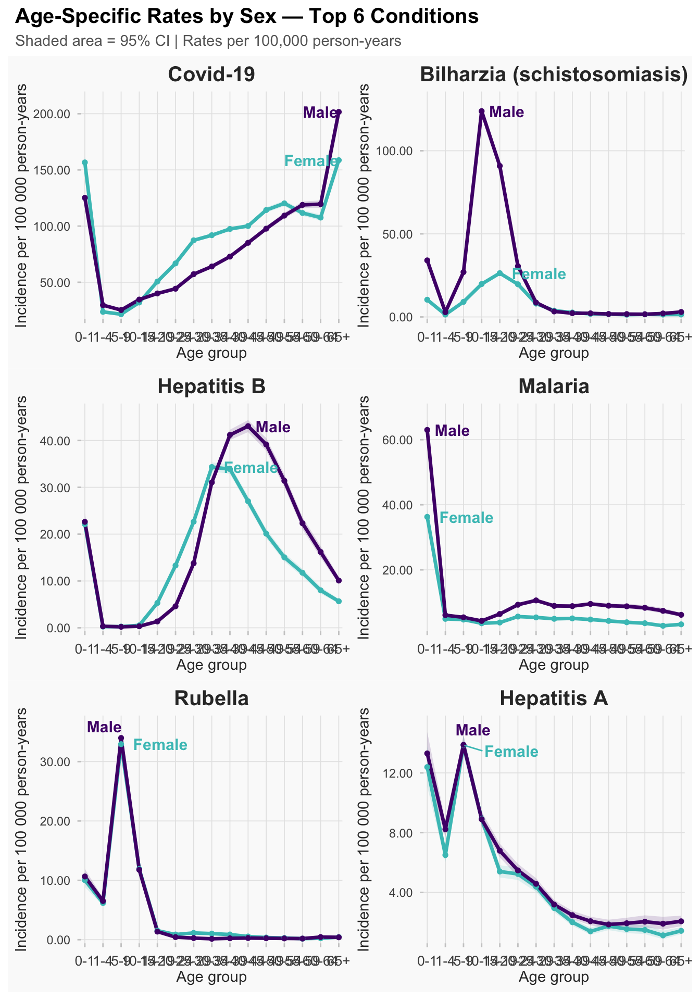
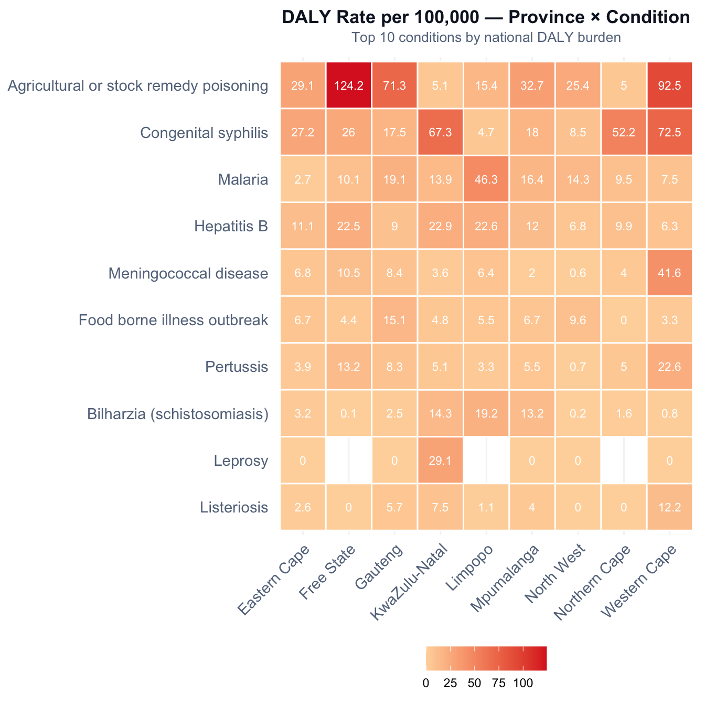
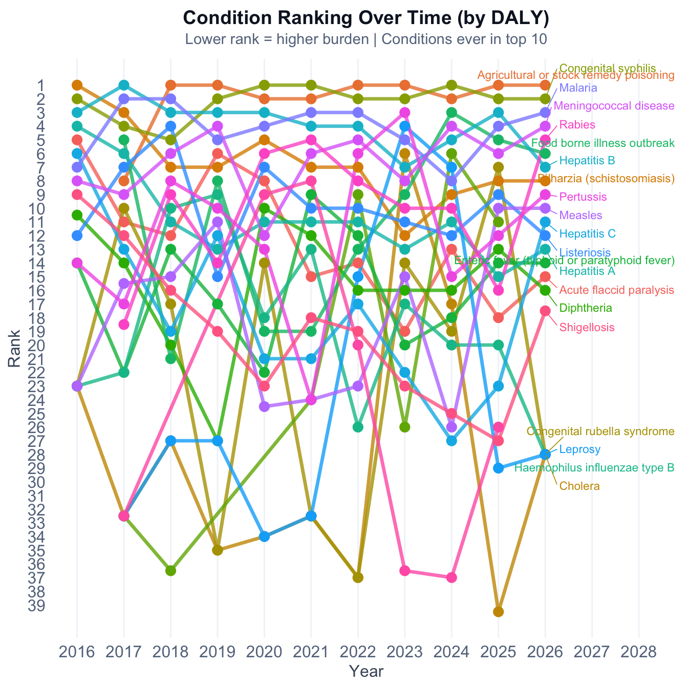

Burden of Disease
Quantifying health impact through mortality, disability, and severity indicators
This page translates raw NMC case notifications into population-level health impact indicators, moving beyond simple case counts to quantify the mortality, disability, and economic burden of notifiable conditions across South Africa. Each metric answers a different policy question:
| Indicator | Question answered | Method |
|---|---|---|
| YLL | How many years of life are lost to premature death? | SA life tables (Stats SA 2024) |
| DALYs | What is the combined mortality + morbidity burden? | YLL + YLD (GBD 2019 disability weights) |
| CFR | How severe (lethal) is each condition? | Deaths / cases with 95% Wilson CI |
| PYPLL | Which conditions impact the working-age population most? | Years lost in ages 15–64 |
| ASR | How do rates compare after adjusting for age structure? | WHO direct standardisation |
Estimates depend on data quality and reporting completeness. The NMC is a passive surveillance system — under-reporting varies by condition and province. See Methodology for full details.
Key Indicators
113,814
Total DALYs
Combined mortality + disability burden
100,206
Years of Life Lost
Premature mortality (YLL)
13,608
Years with Disability
Morbidity burden (YLD)
2,420
Deaths
From 821,449 notified cases
55
Conditions Tracked
Highest burden: Agricultural or stock remedy poisoning
17.44%
Highest CFR
Rabies
Key finding: The top 3 conditions (Agricultural or stock remedy poisoning, Congenital syphilis, Malaria) account for 51% of all DALYs. Scroll down for detailed breakdowns by mortality, severity, demographics, and geography.
Years of Life Lost
Premature mortality burden: for each death at age \(x\), YLL \(= e(x)\) where \(e(x)\) is remaining life expectancy from the SA abridged life table (Stats SA 2024).
Disability-Adjusted Life Years
DALY \(=\) YLL \(+\) YLD, combining premature mortality with morbidity (\(\text{YLD} = \text{cases} \times \text{disability weight} \times \text{duration}\)). Disability weights from GBD 2019.
Case Fatality Rate
CFR \(= \frac{\text{Deaths}}{\text{Cases}} \times 100\%\) — a direct measure of disease severity within the surveillance system. Under-reporting of deaths means true CFRs may be higher.
Severity alert: Rabies has the highest CFR at 17.44% (95% CI: 13.8–21.81). Conditions with high CFR warrant enhanced clinical surveillance and rapid response.
Productive Life Years Lost
PYPLL focuses on the working-age window (15–64): \(\text{PYPLL}(x) = 65 - x\). This complements YLL by highlighting conditions that disproportionately affect the productive workforce.
Economic impact: Agricultural or stock remedy poisoning accounts for the most productive life years lost (12,680 PYPLL), with a median age at death of 31 years. Conditions with high PYPLL merit targeted workforce-age interventions.
Age-Standardised Rates
Direct standardisation using the WHO World Standard Population (Ahmad et al. 2001) enables fair comparison across populations with different age structures. 95% CIs use the Poisson exact method.
Sex | Total Cases | Crude Rate (per 100k) | ASR (per 100k) | ASR 95% CI |
|---|---|---|---|---|
Female | 319,952 | 208.26 | 208.64 | 205.89 – 211.43 |
Male | 384,725 | 260.17 | 266.20 | 262.95 – 269.47 |
Female | Male | |||||||||||
|---|---|---|---|---|---|---|---|---|---|---|---|---|
Age | WHO | Avg | Avg | Age Specific | ASR | 95% CI | Avg | Avg | Age Specific | ASR | 95% CI | p-value‡ |
0-1 | 1.77 | 543,958 | 8,771 | 1,612.51 | 28.57 | 1597.46 - 1627.68 | 557,690 | 12,023 | 2,155.93 | 38.20 | 2138.73 - 2173.23 | <0.001 |
1-4 | 7.09 | 2,175,832 | 2,777 | 127.63 | 9.05 | 125.52 - 129.77 | 2,230,762 | 3,242 | 145.31 | 10.30 | 143.08 - 147.57 | <0.001 |
5-9 | 8.69 | 2,695,647 | 3,313 | 122.89 | 10.68 | 121.02 - 124.77 | 2,759,331 | 4,004 | 145.12 | 12.61 | 143.12 - 147.15 | <0.001 |
10-14 | 8.60 | 2,767,783 | 2,812 | 101.60 | 8.74 | 99.93 - 103.29 | 2,813,913 | 5,772 | 205.11 | 17.64 | 202.75 - 207.49 | <0.001 |
15-19 | 8.47 | 2,508,525 | 3,355 | 133.74 | 11.33 | 131.73 - 135.78 | 2,532,578 | 4,550 | 179.65 | 15.22 | 177.32 - 182.00 | <0.001 |
20-24 | 8.22 | 2,354,080 | 4,039 | 171.58 | 14.10 | 169.22 - 173.97 | 2,376,190 | 3,690 | 155.29 | 12.76 | 153.06 - 157.55 | <0.001 |
25-29 | 7.93 | 2,624,042 | 5,297 | 201.88 | 16.01 | 199.46 - 204.33 | 2,641,902 | 4,657 | 176.28 | 13.98 | 174.03 - 178.56 | <0.001 |
30-34 | 7.61 | 2,818,920 | 6,210 | 220.31 | 16.77 | 217.87 - 222.78 | 2,851,764 | 6,218 | 218.05 | 16.59 | 215.63 - 220.48 | 0.2 |
35-39 | 7.15 | 2,554,895 | 5,974 | 233.82 | 16.72 | 231.17 - 236.48 | 2,608,738 | 6,930 | 265.66 | 18.99 | 262.87 - 268.47 | <0.001 |
40-44 | 6.59 | 1,999,732 | 4,623 | 231.17 | 15.23 | 228.20 - 234.17 | 2,038,725 | 6,171 | 302.70 | 19.95 | 299.33 - 306.10 | <0.001 |
45-49 | 6.04 | 1,649,447 | 3,850 | 233.41 | 14.10 | 230.13 - 236.73 | 1,631,661 | 5,092 | 312.06 | 18.85 | 308.24 - 315.92 | <0.001 |
50-54 | 5.37 | 1,448,712 | 3,259 | 224.97 | 12.08 | 221.53 - 228.45 | 1,293,813 | 4,144 | 320.28 | 17.20 | 315.93 - 324.67 | <0.001 |
55-59 | 4.55 | 1,333,915 | 2,654 | 198.95 | 9.05 | 195.58 - 202.36 | 1,050,135 | 3,318 | 315.94 | 14.38 | 311.15 - 320.79 | <0.001 |
60-64 | 3.72 | 1,157,107 | 2,121 | 183.28 | 6.82 | 179.81 - 186.81 | 850,654 | 2,455 | 288.58 | 10.74 | 283.49 - 293.73 | <0.001 |
65+ | 8.23 | 2,093,624 | 4,935 | 235.72 | 19.40 | 232.78 - 238.68 | 1,337,581 | 4,679 | 349.81 | 28.79 | 345.34 - 354.32 | <0.001 |
Total | 100.00 | 30,726,219 | 63,990 | 208.26 | 208.65 | 29,575,437 | 76,945 | 260.17 | 266.20 | |||
*Population estimates from Statistics SA MYPE. Average populations and cases over the study period. Rates per 100 000 person-years. | ||||||||||||
†ASR = Age-Standardised Rate (direct method); each age-specific rate multiplied by the WHO standard population weight. | ||||||||||||
‡Two-sample Poisson exact test comparing female vs male incidence within each age group (two-sided). | ||||||||||||
NoteInterpreting the IRR
The Incidence Rate Ratio (IRR) compares female vs male age-specific incidence rates within each age band using a two-sample Poisson exact test.
- IRR > 1 → Higher incidence in females
- IRR < 1 → Higher incidence in males
- p-value → Statistical significance of the difference (two-sided)

Province | Cases (F) | ASR (F) | 95% CI (F) | Cases (M) | ASR (M) | 95% CI (M) | IRR (F/M) |
|---|---|---|---|---|---|---|---|
Gauteng | 88,982 | 58.20 | 56.75–59.68 | 98,048 | 69.03 | 67.39–70.69 | 0.84 |
KwaZulu-Natal | 70,848 | 45.90 | 44.62–47.21 | 83,720 | 56.73 | 55.26–58.23 | 0.81 |
Western Cape | 55,749 | 36.43 | 35.28–37.62 | 60,343 | 42.38 | 41.08–43.71 | 0.86 |
Eastern Cape | 29,987 | 19.68 | 18.84–20.54 | 38,287 | 26.90 | 25.89–27.95 | 0.73 |
Limpopo | 18,584 | 12.09 | 11.46–12.76 | 32,121 | 21.51 | 20.65–22.4 | 0.56 |
Free State | 14,817 | 9.69 | 9.11–10.31 | 17,816 | 12.60 | 11.9–13.32 | 0.77 |
North West | 14,235 | 9.26 | 8.69–9.86 | 18,375 | 12.77 | 12.07–13.49 | 0.73 |
Mpumalanga | 12,501 | 8.13 | 7.6–8.7 | 19,131 | 12.80 | 12.13–13.49 | 0.64 |
Northern Cape | 13,776 | 8.94 | 8.39–9.52 | 16,586 | 11.27 | 10.63–11.94 | 0.79 |
Geographic Variation
Crude DALY and YLL rates per 100,000 population by province. For age-adjusted comparisons, see the ASR section above.
Province | Population | Deaths | Cases | Total YLL | Total YLD | Total DALY | DALY/100k | YLL/100k |
|---|---|---|---|---|---|---|---|---|
Western Cape | 7,187,004 | 439 | 107,149 | 19,891 | 1,880.3 | 21,772 | 302.93 | 276.77 |
Free State | 2,928,903 | 167 | 23,695 | 6,981 | 475.8 | 7,457 | 254.60 | 238.35 |
KwaZulu-Natal | 11,538,813 | 538 | 227,163 | 20,180 | 4,844.4 | 25,024 | 216.87 | 174.88 |
Gauteng | 16,098,571 | 707 | 188,666 | 29,754 | 1,925.9 | 31,679 | 196.78 | 184.82 |
Limpopo | 5,941,439 | 203 | 89,890 | 7,402 | 1,272.2 | 8,674 | 146.00 | 124.58 |
Eastern Cape | 6,734,001 | 172 | 63,387 | 7,053 | 1,419.1 | 8,472 | 125.81 | 104.74 |
Mpumalanga | 4,743,584 | 107 | 76,136 | 4,760 | 1,121.4 | 5,881 | 123.98 | 100.35 |
Northern Cape | 1,303,047 | 25 | 17,833 | 1,263 | 287.6 | 1,550 | 118.95 | 96.90 |
North West | 4,141,774 | 62 | 27,530 | 2,923 | 381.0 | 3,304 | 79.77 | 70.57 |

Temporal Trends
Year-over-year trends in burden indicators reveal emerging and declining conditions.
Demographics
Age-sex pyramids reveal which demographic groups bear the greatest notification burden — useful for targeting surveillance and intervention.
Condition Rankings Over Time
Tracking year-over-year rank changes in DALY burden identifies emerging threats and declining conditions.

Data Exports
DALY Summary — All Conditions
Use the search box and column filters below, then use the CSV or Copy buttons to export.
Province Summary
Methodology & Assumptions
NoteTechnical details (click to expand)
YLL calculation: For each death at age \(x\): \[\text{YLL}(x) = e(x)\] where \(e(x)\) is the remaining life expectancy at age \(x\) from the Stats SA 2024 abridged life table (both sexes combined). Total YLL per condition = \(\sum \text{YLL}(x_i)\) across all deaths \(i\).
YLD calculation: \[\text{YLD} = N \times \text{DW} \times D\] where \(N\) = incident cases, \(\text{DW}\) = GBD 2019 disability weight, and \(D\) = average illness duration (years).
DALY: \[\text{DALY} = \text{YLL} + \text{YLD}\]
Life table: Stats SA 2024 mid-year population estimates (P0302, Table 6), both sexes combined. An alternative GBD 2019 reference life table (aspirational / global benchmark) is available in the functions but not used by default.
Disability weights: GBD 2019 (Salomon et al. Lancet 2015; GBD 2019 Diseases and Injuries Collaborators). Where a condition-specific weight is not available, a default of DW = 0.01 with 14-day duration is used.
Death identification: A case is counted as a death if patient_vital_status == "Deceased" OR patientoutcome ∈ {"Died", "Died (non-Covid)"}. Cases missing both fields are assumed surviving.
Province rates: Per-capita rates use Stats SA 2024 mid-year estimates. Rates are crude (not age-standardised) at the province level — for full age-standardised rates, see the ASR functions in R/asr_functions.r.
Age-standardised rates (ASR): Direct standardisation using the WHO World Standard Population (Ahmad et al. 2001, modified Segi). The 0-4 band is split into 0-1 / 1-4 using a 1:4 ratio; bands 65-69 through 85+ are collapsed into 65+. For each age band \(a\) and sex \(s\): \[\text{ASR} = \sum_a w_a \times \frac{c_{a,s}}{n_{a,s}}\] where \(w_a\) = WHO standard weight, \(c_{a,s}\) = cases, \(n_{a,s}\) = population. 95% CIs use the Poisson exact method (via epitools::pois.exact). The Incidence Rate Ratio (IRR) compares female vs male rates using a two-sample Poisson exact test.
Population denominators are from NMCleaner::pop (sourced from Stats SA Mid-Year Population Estimates).
Limitations:
- The NMC is a passive surveillance system; substantial under-reporting is expected for most conditions.
- Death ascertainment depends on vital status being correctly recorded — many cases have
Unknownvital status. - Disability weights are global averages and may not perfectly reflect the South African disease profile.
- Duration estimates assume uncomplicated disease in most cases.
Disability Weight Reference Table
Pattern | Disability Weight | Duration (days) | Source |
|---|---|---|---|
measles | 0.051 | 14 | GBD 2019; Salomon et al. Lancet 2015 |
rubella | 0.012 | 14 | GBD 2019; Salomon et al. Lancet 2015 |
pertussis | 0.027 | 56 | GBD 2019; Salomon et al. Lancet 2015 |
diphtheria | 0.187 | 21 | GBD 2019; Salomon et al. Lancet 2015 |
tetanus | 0.247 | 30 | GBD 2019; Salomon et al. Lancet 2015 |
hepatitis b | 0.051 | 42 | GBD 2019; Salomon et al. Lancet 2015 |
haemophilus | 0.051 | 14 | GBD 2019; Salomon et al. Lancet 2015 |
congenital rubella | 0.187 | 365 | GBD 2019; Salomon et al. Lancet 2015 |
polio|flaccid paralysis | 0.369 | 365 | GBD 2019; Salomon et al. Lancet 2015 |
yellow fever | 0.133 | 14 | GBD 2019; Salomon et al. Lancet 2015 |
cholera | 0.105 | 7 | GBD 2019; Salomon et al. Lancet 2015 |
enteric fever|typhoid | 0.051 | 21 | GBD 2019; Salomon et al. Lancet 2015 |
hepatitis a | 0.051 | 28 | GBD 2019; Salomon et al. Lancet 2015 |
hepatitis c | 0.051 | 42 | GBD 2019; Salomon et al. Lancet 2015 |
hepatitis e | 0.051 | 28 | GBD 2019; Salomon et al. Lancet 2015 |
shigellosis | 0.105 | 7 | GBD 2019; Salomon et al. Lancet 2015 |
salmonellosis | 0.061 | 7 | GBD 2019; Salomon et al. Lancet 2015 |
listeriosis | 0.133 | 14 | GBD 2019; Salomon et al. Lancet 2015 |
food borne | 0.061 | 3 | GBD 2019; Salomon et al. Lancet 2015 |
covid | 0.051 | 14 | GBD 2019; Salomon et al. Lancet 2015 |
tuberculosis.*pulmonary | 0.333 | 180 | GBD 2019; Salomon et al. Lancet 2015 |
tuberculosis.*extra | 0.333 | 180 | GBD 2019; Salomon et al. Lancet 2015 |
tuberculosis.*mdr|tuberculosis.*xdr | 0.408 | 365 | GBD 2019; Salomon et al. Lancet 2015 |
meningococcal | 0.615 | 14 | GBD 2019; Salomon et al. Lancet 2015 |
malaria | 0.051 | 7 | GBD 2019; Salomon et al. Lancet 2015 |
rift valley | 0.133 | 14 | GBD 2019; Salomon et al. Lancet 2015 |
rabies | 0.615 | 5 | GBD 2019; Salomon et al. Lancet 2015 |
mpox | 0.051 | 21 | GBD 2019; Salomon et al. Lancet 2015 |
anthrax | 0.133 | 14 | GBD 2019; Salomon et al. Lancet 2015 |
brucellosis | 0.051 | 42 | GBD 2019; Salomon et al. Lancet 2015 |
leprosy | 0.011 | 365 | GBD 2019; Salomon et al. Lancet 2015 |
bilharzia|schistosomiasis | 0.027 | 365 | GBD 2019; Salomon et al. Lancet 2015 |
congenital syphilis | 0.187 | 365 | GBD 2019; Salomon et al. Lancet 2015 |
lead poisoning | 0.012 | 365 | GBD 2019; Salomon et al. Lancet 2015 |
mercury poisoning | 0.012 | 365 | GBD 2019; Salomon et al. Lancet 2015 |
maternal death | 0.000 | 0 | GBD 2019; Salomon et al. Lancet 2015 |
Updating BoD Data
ImportantStep-by-step instructions
Ensure the master data is up to date — the feather file at
~/Desktop/SAFETP/CLA/NMC_database/master/new_master.featherRun the BoD preparation script (from the project root directory):
Rscript R/prepare_bod_data.r- Run the ASR preparation script:
Rscript R/prepare_asr_data.r- Re-render this page:
quarto render burden-of-disease/index.qmdTo adjust disability weights or life table: edit R/burden_of_disease.r → nmc_disability_weights() or sa_life_table() functions.
TipRelated Sections
- By Condition — national trend lines for each condition
- Trending — real-time signal detection
- Data Quality — completeness and timeliness of underlying data
- Methods — full technical documentation